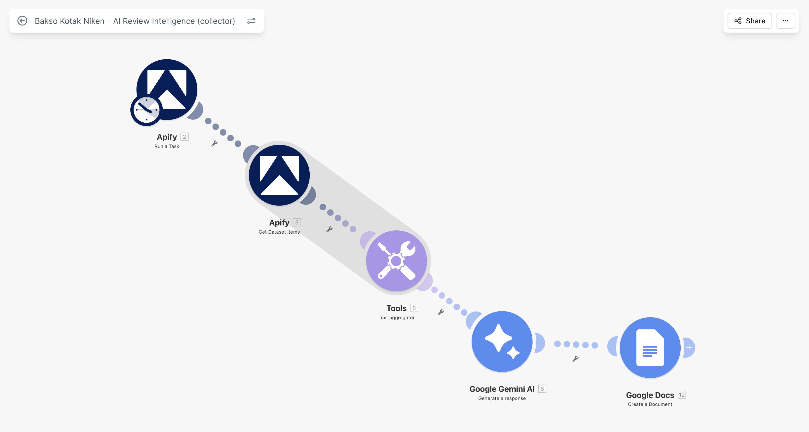
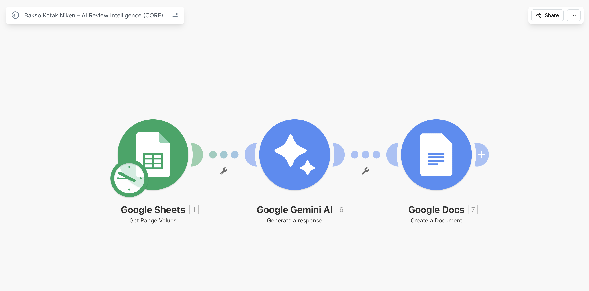

Back to portfolio
⚙️ AI Review Intelligence System
End to end AI system that collects, analyzes, and transforms customer reviews into actionable business insights automatically.
OVERVIEW
What this system does
This system collects customer reviews from external platforms and transforms raw feedback into structured business intelligence using AI.
Instead of manually reading reviews, businesses receive clear insights about customer satisfaction, problems, and opportunities automatically.
ARCHITECTURE
System architecture
The system is built from two connected layers that work together as one pipeline.
The data collection layer gathers reviews from Google Maps using Apify and prepares them for processing.

The intelligence layer processes the data using AI to extract insights, patterns, and business recommendations.

PROCESS
How it works
- Collects customer reviews from Google Maps using Apify
- Aggregates and cleans raw review data
- Stores structured data in a database
- Uses AI to analyze sentiment and patterns
- Identifies positive feedback and complaints
- Generates improvement suggestions
- Automatically creates a business report
OUTPUT
What the system delivers
- Top customer satisfaction drivers
- Most common complaints
- Clear improvement actions
- Pricing and portion insights
- Overall sentiment analysis
- Automated business reports
BUSINESS VALUE
Why this matters
- Reduces manual review analysis by up to 90 percent
- Provides instant insight into customer experience
- Helps businesses improve faster based on real data
- Eliminates guesswork in decision making
- Turns feedback into direct business actions
USE CASES
Where businesses use this
- Restaurants and hospitality
- Retail and ecommerce
- Service based businesses
- Franchise performance tracking
- Customer experience optimization
TECH
Tech stack
- Make.com automation
- Apify scraping engine
- Google Gemini AI
- Google Sheets database
- Google Docs reporting